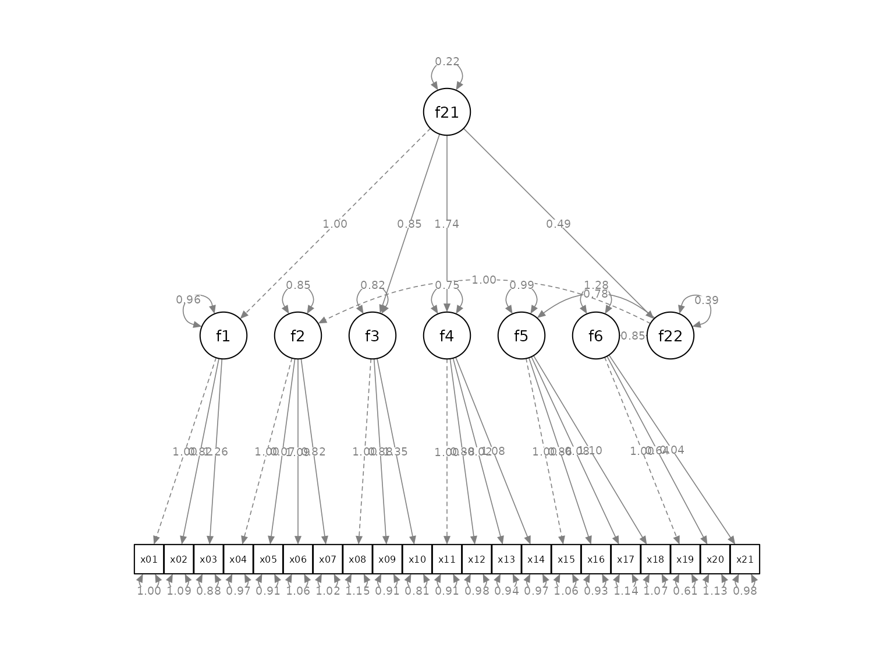
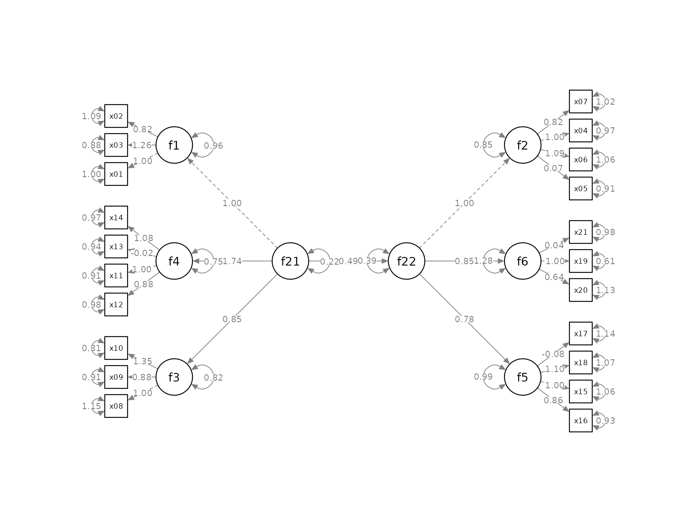
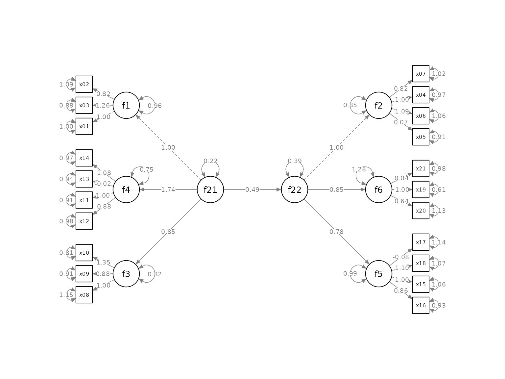

vignettes/second_order.Rmd
second_order.RmdThis article illustrates how to use set_sem_layout() for
a model with second-order factors. Readers are assumed to have learned
how to use set_sem_layout() (see
vignette("quick_start_sem")).
semPaths Plot
We will use sem_2nd_order_example, a sample SEM dataset
from semptools with 21 variables for illustration.
library(semptools)
head(round(sem_2nd_order_example, 3), 3)
#> x01 x02 x03 x04 x05 x06 x07 x08 x09 x10 x11
#> 1 0.773 0.246 0.959 1.819 -0.193 3.025 2.311 0.403 1.722 0.758 0.645
#> 2 0.757 0.303 0.139 0.516 0.514 2.145 -0.589 1.667 -0.001 2.513 2.381
#> 3 0.665 -1.135 0.199 0.764 -0.098 -1.293 1.481 -3.501 -1.215 -1.614 -0.073
#> x12 x13 x14 x15 x16 x17 x18 x19 x20 x21
#> 1 -0.813 0.609 1.323 1.852 0.428 -0.284 -1.106 0.509 1.111 0.483
#> 2 2.102 -0.805 2.567 1.097 -0.288 -1.007 0.530 -0.722 -0.590 1.164
#> 3 -0.150 0.639 -1.507 0.860 -0.899 -0.882 -1.275 -0.616 -0.975 0.007This is the SEM model to be fitted:
mod <-
'f1 =~ x01 + x02 + x03
f2 =~ x04 + x05 + x06 + x07
f3 =~ x08 + x09 + x10
f4 =~ x11 + x12 + x13 + x14
f5 =~ x15 + x16 + x17 + x18
f6 =~ x19 + x20 + x21
f21 =~ 1*f1 + f3 + f4
f22 =~ 1*f2 + f5 + f6
f22 ~ f21
'Fitting the model using lavaan::sem():
library(lavaan)
#> This is lavaan 0.6-14
#> lavaan is FREE software! Please report any bugs.
fit <- lavaan::sem(mod, sem_2nd_order_example)This is the plot from semPaths:
library(semPlot)
p <- semPaths(fit, whatLabels = "est",
sizeMan = 5,
nCharNodes = 0, nCharEdges = 0,
edge.width = 0.8, node.width = 0.7,
edge.label.cex = 0.6,
style = "ram",
mar = c(5, 5, 5, 5))
As described in vignette("set_sem_layout"), the plot can
be modified by set_sem_layout(), with these special
treatment:
To modify a plot with second order factors:
The “indicators” of a second-order factor need to be included in
the vector for the indicator_order argument.
In the matrix for factor_layout, all factors, first
or second order, should be included.
Although a second-order factor has latent factors as their
indicators, the direction of a second-order factor in the
factor_point_to matrix is ignored. The position of the
indicators of a second-order factor are determined by the
factor_layout matrix.
In the example below, f1 to f6, though
latent factors themselves, are included in the vector for
indicator_order.
indicator_order <- c("x01", "x03", "x02",
"x05", "x06", "x04", "x07",
"x08", "x09", "x10",
"x12", "x11", "x13", "x14",
"x16", "x15", "x18", "x17",
"x20", "x19", "x21",
"f1", "f3", "f4",
"f5", "f6", "f2")
indicator_factor <- c("f1", "f1", "f1",
"f2", "f2", "f2", "f2",
"f3", "f3", "f3",
"f4", "f4", "f4", "f4",
"f5", "f5", "f5", "f5",
"f6", "f6", "f6",
"f21", "f21", "f21",
"f22", "f22", "f22")
factor_layout <- matrix(c( NA, "f21", NA, NA, NA, "f22", NA,
"f1", "f4", "f3", NA, "f2", "f6", "f5"),
byrow = TRUE, 2, 7)
factor_layout <- matrix(c("f1", NA, NA, "f2",
"f4", "f21", "f22", "f6",
"f3", NA, NA, "f5"),
byrow = TRUE, 3, 4)
factor_point_to <- matrix(c("left", NA, NA, "right",
"left", "left", "right", "right",
"left", NA, NA, "right"),
byrow = TRUE, 3, 4)
indicator_spread <- c(f4 = 1.25,
f2 = 1.25,
f5 = 1.25)
p2 <- set_sem_layout(p,
indicator_order = indicator_order,
indicator_factor = indicator_factor,
factor_layout = factor_layout,
factor_point_to = factor_point_to,
indicator_spread = indicator_spread)This is the result:
plot(p2)
The layout is acceptable. It can be further modified by other
functions described in vignette("semptools"). For example,
the residuals can be rotated:
my_rotate_resid_list <- c(f4 = 45,
f21 = 0,
f22 = 0,
f6 = -45)
p3 <- rotate_resid(p2, my_rotate_resid_list)
plot(p3)
Please refer to vignette("quick_start_sem") on other
options of set_sem_layout() and how to use it with other
functions in the package.